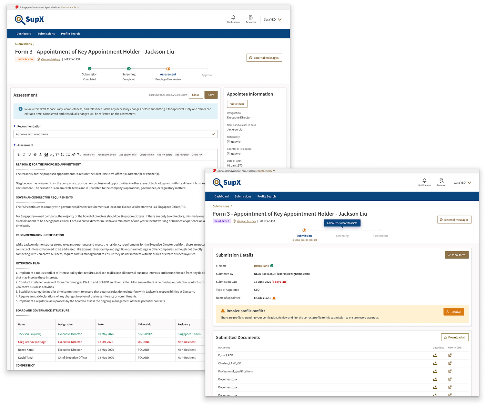

SupervisoryX
Building AI-driven assessments for supervisory officers
Introduction
Responsibilities:
- Designing for AI
- UX strategy + research
- Workshop facilitation
- Product direction
Scope:
MAS Officer assessing FIs appointing their CEOs/Directors
Context
SupervisoryX is MAS' supervisory workspace. Officers use it to review regulatory submissions from financial institutions (FIs) and more. This case study focuses on submissions from FIs appointing a CEO/Director.
Before SupX, a submission required an officer to work across TxO, DMS, Excel, Envis, GPGs, SOPs, Word and more. Much of the work was copy-pasting from various sources, manual assessment writing, checking emails, and searching for information.
How might we help officers review complex submissions efficiently, minimising fragmentation of platforms and manual work?
Outcome
SupX brings the whole submission lifecycle into one place — Details, Screening, Assessment, Approval and Completion. It also leverages AI to write a first cut of the assessment.
One workspace, not seven
Details → Screening → Assessment → Approval → Completion, replacing various platforms eg. TxO, DMS, Outlook, Envis and Word.
An assessment first cut, not a black box
Structured sections generated from dept templates, submission and screening results. Every claim links back to a source.
What officers said
"More assuring than the previous one, because this is really structured in the way that we currently assess it… it could potentially make our assessments more consistent across different teams." — Capital Markets Officer
"So ready." — Financial Advisors Supervisory Officer, when asked how ready she would be to use the platform
Metrics from beta testing
Full case study presentation available upon request.